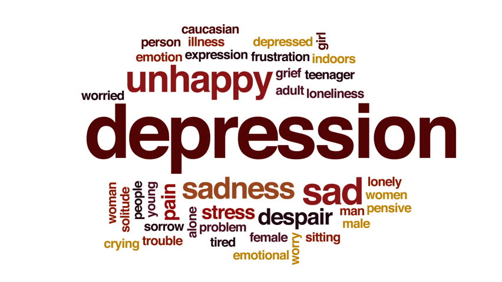

Depression (major depressive disorder or clinical depression) is a common but serious mood disorder. It causes severe symptoms that affect how you feel, think, and handle daily activities, such as sleeping, eating, or working. To be diagnosed with depression, the symptoms must be present for at least two weeks.
Some forms of depression are slightly different, or they may develop under unique circumstances, such as:
- depressive disorder
- Postpartum depression
- Seasonal affective disorder
- Psychotic depression
- Bipolar disorder

Abnormal is the new normal — at least for mental health. Only a small share of the population stays mentally healthy from age 11 to 38. Everyone else experiences a mental illness at some point, a new study finds.There is often a stigma attached to mental illness. But if more people realize that most will eventually develop some mental disorder, at least briefly, that stigma might fall, Eaton suspects.
Depressed mood is a symptom of some mood disorders such as major depressive disorder or dysthymia.It is a normal temporary reaction to life events, such as the loss of a loved one; and it is also a symptom of some physical diseases and a side effect of some drugs and medical treatments.